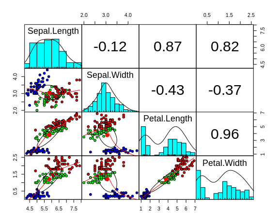
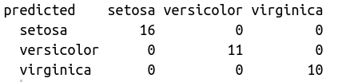
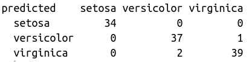

Se puede observar que exitste una correlación entre el largo y ancho del pétalo
Se puede observar que el grupo "Setosa" no se empalma con las otras especies. Mientras que Versicolor y Verginica sí
Datos de entrenamiento
Datos de prueba
Se puede inferir que todas las flores pertenecen a su respectiva especie